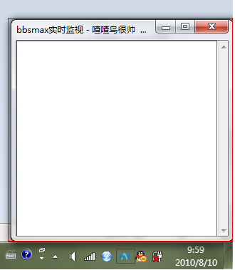
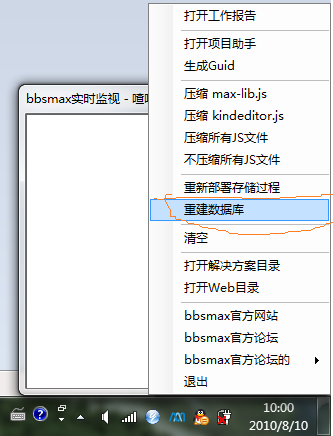
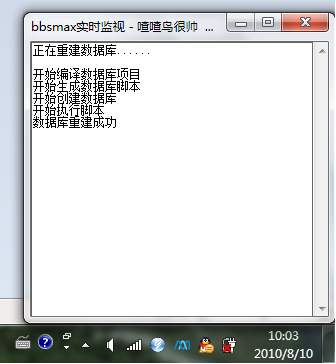

第一步：打开项目,编译解决方案
双击源码包里的解决方案文件“bx5.sln” 打开解决方案。
在解决方案资源管理器窗口右键点击“解决方案bx5”选中重新生成解决方案，编译全部项目。Visual
Studio会通过生成事件命令行启动bbsmax项目助手程序（ProjectHelper.exe） 此时会弹出项目助手窗口并在任务栏托盘区出现一个bbsmax logo的图标，如图1所示。

图1
如果未出现这个窗口，请检查解决方案配置是否选择Debug模式
第二步：配置本地数据库数
bbsmax支持 SQL Server 2000 ～ 2008 的数据库类型。
1、设置数据库身份验证为 “SQL Server 和 Windows 身份验证模式”
2、修改数据库系统sa用户的密码为kissbbsmax （必须的）
SQL Server的配置基本完成。
第三步：建立数据库
1、在刚刚弹出的那个bbsmax项目助手的窗口空白区域点击右键，点击“重建数据库”
如图2所示

图2
2、耐心等待,项目助手执行数据库脚步新建数据库，如图3所示：

图3
完成以上步骤之后，把MaxLabs.bbsMax.Web设置为启动项目（默认应该就是启动项目），就可以点击Visual Studio 上的绿色三角符号在浏览器里查看效果了